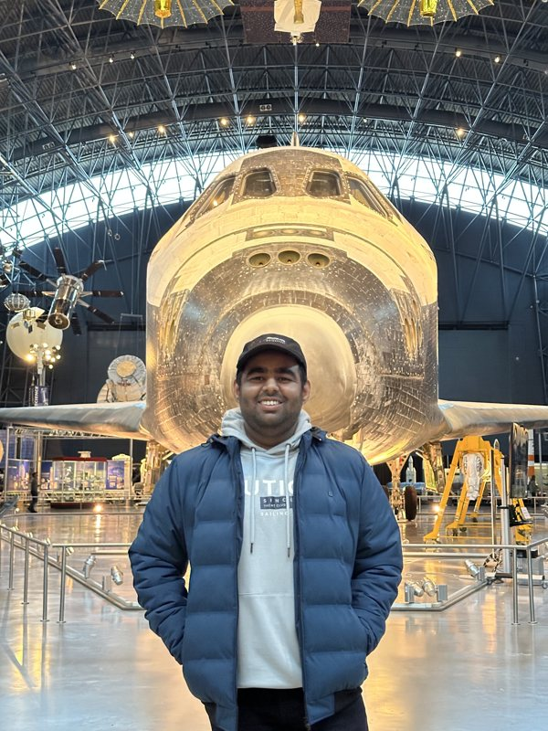

Robotics Engineer: helping robots see, think, and move autonomously.
About me
I’m a Robotics Engineer at Meta, currently working as a Robot Operations Engineer, teleoperating robotic systems to collect high-fidelity demonstration data and benchmarking VLA model performance on physical robots. I hold a Master’s in Robotics from the University of Maryland, where I specialized in building intelligent, real-world deployable robotic systems. My expertise lies at the intersection of autonomous navigation, perception pipelines, and system integration for mobile and aerial robots.
My journey began with a B.Tech in Electrical Engineering from IET Lucknow, and evolved through hands-on experience with Robot Operating System (ROS), PX4 Autopilot, and embedded systems like VOXL2. I’ve developed UAV-based 3D reconstruction pipelines using ROS2, PX4, and feature-matching techniques, and deployed ground robots equipped with LiDAR, YOLOv8, and behavior planners for real-time decision-making. I've also containerized robotics pipelines with Docker and scaled them on AWS for cloud-based applications.
Prior to graduate school, I worked at Tata Consultancy Services (TCS) as an Assistant System Engineer, maintaining Salesforce Commerce Cloud storefronts for a leading e-commerce client. I thrive in fast-paced environments, enjoy attending hackathons and robotics conferences, and am always eager to collaborate on cutting-edge projects in autonomy, AI, or robot perception.
Specialties
- Autonomous Navigation ROS2, PX4, Behavior Planning
- Perception RGBD camera, Stereo Vision, CNN and Deep Learning
- 3D Vision Structure-from-Motion, MASt3R, Open3D
- Embedded & Cloud Robotics VOXL SDK, Docker, AWS
 Built with Claude
Built with Claude